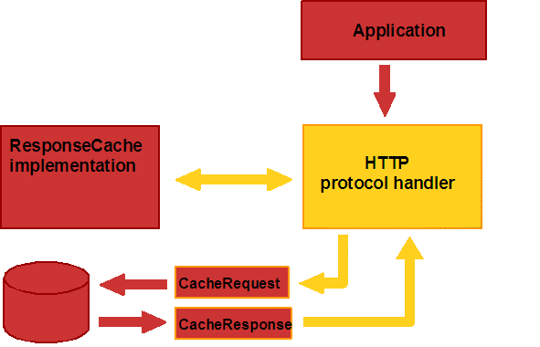

HTTP 는, 일반적으로, 분산 정보 시스템에 사용되어 그 시스템에서는 응답 캐쉬의 사용에 의해 퍼포먼스가 향상하는 경우가 있습니다. HTTP 프록시 서버-는, 최근 액세스 한 Web 자원을 일반적으로 캐쉬합니다만, 한편으로 로컬 캐쉬가 있는 것이 좋은 일도 있습니다. 그 예로서 브라우저 캐쉬가 있습니다.
Tiger 에서는, 새로운 시스템에 의해, 플랫폼 또는 서드 파티에서 구현한 응답 캐쉬 기구에 대해, 프로토콜 핸들러를 액세스 할 수 있게 되었습니다.
다음에, 그 API 를 나타냅니다.
java.net 패키지에 3 개의 abstract 클래스를 도입하고 있습니다. 이것들은 이하대로입니다.
ResponseCache 의 구상 서브 클래스란, URLConnection 캐쉬 자체를 나타냅니다. 이러한 클래스의 인스턴스는, ResponseCache.setDefault()를 호출해 시스템에 등록할 수가 있어 이 시스템은 다음의 목적을 위해서(때문에) 이 객체를 호출합니다.
ResponseCache 에는, 다음의 2 개의 메소드가 준비되어 있습니다. get()에서는, URI 와 요구 헤더에 근거해 CacheResponse 를 돌려줍니다. put()에서는, 자원을 캐싱 할 필요가 있을지 어떨지를 캐쉬로 판단할 수가 있습니다. CacheRequest 를 돌려줍니다.
CacheRequest 의 구상 서브 클래스는, ResponseCache 에의 엔트리의 기입에 사용됩니다. 이러한 클래스의 인스턴스에서는, resource data를 캐쉬에 보존하기 위해서 프로토콜 핸들러로부터 불려 가는 OutputStream 객체에 가세해 캐쉬의 보존 조작을 중단해 파기하는 abort() 메소드를 제공합니다.
CacheRequest 클래스에는, 다음의 2 개의 메소드가 준비되어 있습니다. getBody()에서는, 요구의 본체를 캐쉬에 기입할 때에 필요한 스트림을 돌려줍니다. abort()에서는, 캐쉬의 기입을 중단합니다.
CacheResponse 의 구상 서브 클래스에서는, ResponseCache 로부터 엔트리를 돌려줍니다. 이러한 클래스의 인스턴스에서는, 엔티티 본체를 돌려주는 InputStream 에 가세해 대응하는 요구 헤더를 돌려주는 getHeaders() 메소드를 제공합니다.
CacheResponse 클래스에는, 다음의 2 개의 메소드가 준비되어 있습니다. getBody()에서는, 요구의 본체를 캐쉬로부터 읽어들일 때에 필요한 스트림을 돌려줍니다. getHeaders()에서는, 보존되고 있는 헤더를 돌려줍니다.
다음의 예는, 단순한 파일을 베이스로 한 캐쉬를 나타내고 있습니다. 다만, 캐쉬용 데이타베이스등의 다른 기구를 사용하려면 , 이 예가 한결같게 실행됩니다.
MyCacheResponse 클래스는, CacheResponse 의 구현입니다. 이 클래스에서는, 파일명을 취득해, 그 이름으로부터 HTTP 응답 헤더 및 본체를 가져옵니다.
class MyCacheResponse extends CacheResponse {
FileInputStream fis;
Map<String, List<String>> headers;
public MyCacheResponse(String filename) {
try {
fis = new FileInputStream(new File(filename));
ObjectInputStream ois = new ObjectInputStream (fis);
headers = (Map<String, List<String>>) ois.readObject();
} catch (IOException ex) {
// handle exception
}
}
public InputStream getBody() throws IOException {
return fis;
}
public Map getHeaders() throws IOException {
return headers;
}
}
MyCacheRequest 는, CacheRequest 의 구현입니다. 이 MyCacheRequest 에 의해 파일명과 응답 헤더를 취득해, 파일중의 헤더를 보존함과 함께, 동일 파일에 직접 액세스 하는 OutputStream 를 돌려주어, 어떠한 응답의 본체도 그 자리소에서의 캐쉬가 가능해집니다.
class MyCacheRequest extends CacheRequest {
FileOutputStream fos;
public MyCacheRequest(String filename,
Map<String, List<String>> rspHeaders) {
try {
File file = new File(filename);
fos = new FileOutputStream(file);
ObjectOutputStream oos = new ObjectOutputStream(fos);
oos.writeObject(rspHeaders);
} catch (Exception ex) {
throw new RuntimeException(ex.getMessage());
}
}
public OutputStream getBody() throws IOException {
return fos;
}
public void abort() {
// we abandon the cache by close the stream,
// and delete the file
fos.close();
file.delete();
}
}
최종적으로, ResponseCache 의 구현에 연결시킬 수가 있습니다. 또, 취득 또는 캐쉬한 네트워크 자원의 URI 를 체크해, CacheResponse 또는 CacheRequest 의 몇개의 구현에 관한 적절한 인스턴스 정보를 돌려줍니다. 이 예에서는, 캐쉬로부터의 취득에 대해 URI 가 uri1 에 동일한 경우와 캐쉬의 보존에 대해 URI 가 uri2 에 동일한 경우만 처리를 실시합니다. 다만, 한층 더 복잡한 파일을 베이스로 하는 캐쉬의 처리를 실시할 때는, 간단하게 확장 가능합니다.
class MyResponseCache extends ResponseCache {
public CacheResponse
get(URI uri, String rqstMethod, Map rqstHeaders)
throws IOException {
// get the response from a cached file if available
if (uri.equals(ParseUtil.toURI(uri1))) {
return new MyCacheResponse(FNPrefix+"file1.cache");
}
return null;
public CacheRequest put(URI uri, URLConnection conn)
throws IOException {
// save cache to a file
// 1. serialize headers into file2.cache
// 2. write data to file2.cache
if (uri.equals(ParseUtil.toURI(uri2))) {
return new MyCacheRequest(OutFNPrefix+"file2.cache",
conn.getHeaderFields());
}
return null;
}
}
독자적인 ResponseCache 구현을 개발한 뒤는, 그것을 등록하는 것만으로 JVM 로 사용되게 됩니다.
public static void main(String args[]) throws Exception {
......
ResponseCache.setDefault(new MyResponseCache());
HttpURLConnection http = (HttpURLConnection) url1.openConnection();
InputStream is = null;
......
}
Java 2 Standard Edition 에 있어서의 URLConnection 캐쉬의 디폴트의 구현은 없습니다. 다만, Java Plug-in 및 Java WebStart 에서는, 곧바로 사용할 수 있는 것을 제공합니다.